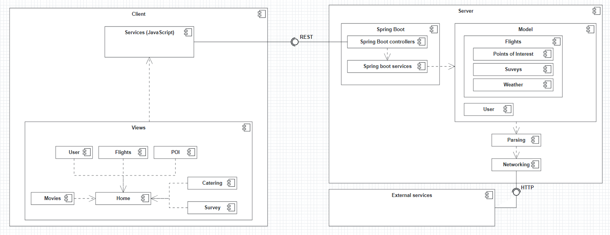
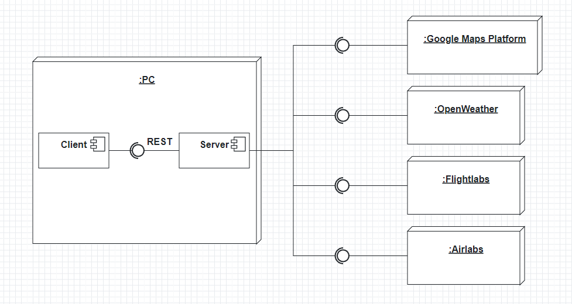
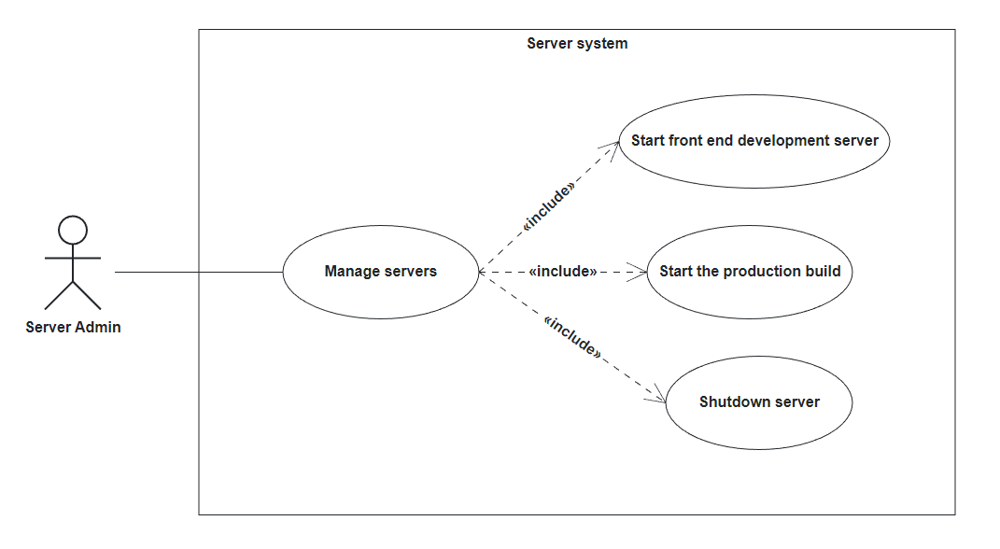

The following system design document will provide an overview over the system design of the Garching Airlines Flight Infotainment System. This SDD will describe the design goals, the system design, the software control and other components of the software, while also providing boundary conditions and models of the system architecture.
NFR1: Usability: The system should be intuitive to use, and the user interface should be easy to understand. All interactions should be completed in less than three clicks.
NFR2: Conformance to guidelines: The design of the system should conform to the typical usability guidelines such as Nielsen’s usability heuristics.
NFR3: Serversystem: A server subsystem with a couple of services must be used in the system. However, additional services like destination information for weather and POIs should be obtained from external services.


There is no persistent data management present in GAFIS. All data is instantiated during runtime and lost after shutdown. The data is stored in Spring beans (objects of service classes) or in static Lists that save all created objects of a class.
UserService maintains a list of all registered users (List<User> systemUsers), as well as if any
user is logged in (boolean loggedIn) and which user that is (User loggedInUser).
Every user also has a List<FlightJourney> of all the booked journeys of the user,
a Flight currentFlight that is the current flight of the user given to the system upon registration and
a List<Reward> of all received rewards for completing Surveys, as well as the unique username and password.
Additionally, there is a static List<Location> locationList in the Location class, which stores already
fetched locations during runtime.
Apart from that, the frontend uses localStorage of the page as well as a reactive global store from the
Pinia library to have access to the logged-in user's username in order to adapt
the Home page as well as other views according to if a user is logged in or not and what is their username. This data
is fetched from the backend on startup or page refresh.
In summary, the following data is stored:
General User data
systemUsersloggedInUserEach user's data
usernamepasswordFlight currentFlightFlightJourney listLocations that have already been fetched (static List<Location> locationList)
Username of currently logged-in user (client)
The only authentication mechanism used in GAFIS is a simple username and password login system. At startup, the user chooses between Register and Login to either perform a login or make an account. When registering, the user is prompted to choose a username and a password (the password cannot be empty), which is later used to log in. The user data is then stored without encryption. When the user logs in, he has to provide his username and password, which both have to be spelled correctly in order for the user to successfully log in. The user has the ability to log out by using the Logout button.
The access rights change depending on whether a user is logged in or not. While the user is not logged in, he is only able to access some of the features of the system.
Those features are:
If the user is logged in into his account, he can use the follwing features:
| Flights | Surveys | Locations | Safety video | Catering | Entertainment | |
|---|---|---|---|---|---|---|
| User (logged in) | viewCurrentFlight() createFlightJourney() addFlight() removeFlight() | participate() | viewLocationData() createPOIList() addPOI() removePOI() | viewSafetyVideo() | orderFoodItem() callFlightAssistant() | watchMovie() |
| User (logged out) | -- | -- | -- | viewSafetyVideo() | orderFoodItem() callFlightAssistant() | watchMovie() |
GAFIS uses a monolithic design and a centralized architecture. The backend server is the only master node in GAFIS and all the data is contained there. Thus, if the backend fails, the system wholly shuts down. All users have their data stored on this server.
Futhermore, GAFIS uses the RESTful API for communicating with the server. Here, a polling-based design is used. This guarantees high performance on the client side, as the server is always accessible.
The functionality is as follows:
There are two main compononents in GAFIS.
The server (backend), which mainly handels the functionality of the system, the storing of data and the management of external services, is the first component.
The client (frontend), which mainly provides a UI of the system, but is also responsible for wrapping and managing the functionality, is the second component.
There are several ways to start / manage those components from a terminal (for developers / server administrators etc.)
This has hot-reload capabilities but does not start the Spring Boot backend.
./gradlew npm_run_dev
open a web browser and visit localhost:3000
./gradlew npm_run_lint
This starts both the server and client applications but does not have hot-reload capabilities.
./gradlew bootRun
open a web browser and visit localhost:8080
./gradlew clean build
^C
When the execution is terminated, the server shuts down and all user and location data is erased.

A use case diagram of a server admin managing the servers
System failures are handled by shutting down the system.